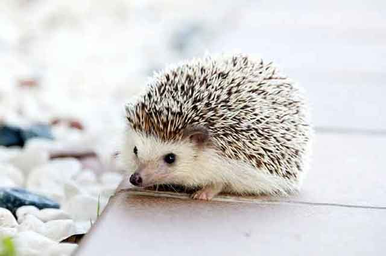
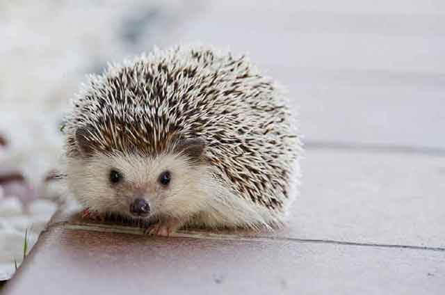
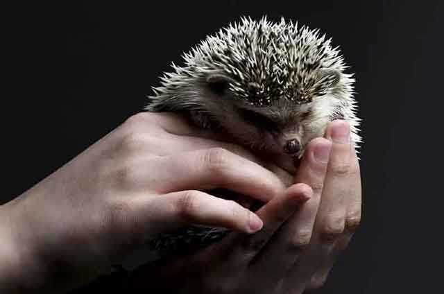
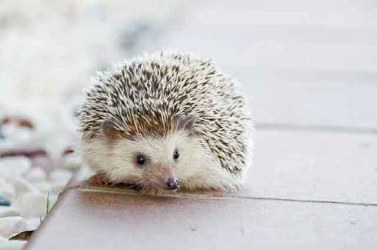
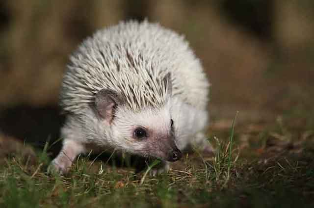
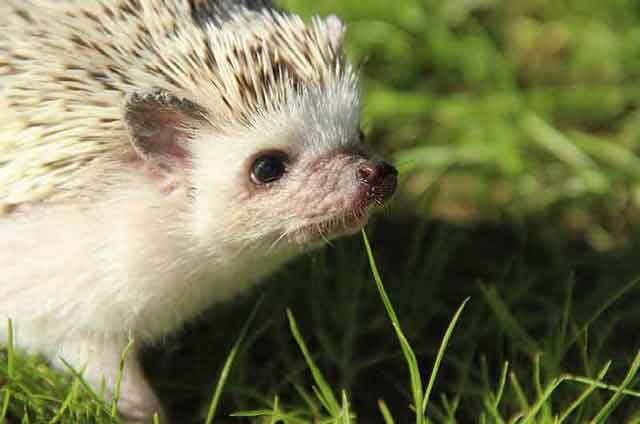

고슴도치를 키우기 위한 기본적인 정보
반려견, 반려묘! 대표적인 반려동물이지만, 이 외에도 사랑스러운 반려동물이 많은데요. 뾰족한 가시가 있어 선뜻 다가가기는 힘들지만, 가시 속에 숨어있는 귀엽고 동글한 외모를 가진 고슴도치. 많은 분이 사랑하는 반려동물 중 하나이기도 하죠. 고슴도치를 키우 전, 몇 가지 알아둬야 할 기본적인 고슴도치에 대한 정보! 먼저 알아보실까요?
* 고슴도치 친해진다면 가시는 무섭지 않아요!
보기만 해도 겁이 나는 가시. 하지만, 무조건 이 가시를 무서워할 필요는 없답니다. 고슴도치도 주인이 누군지를 알아보기 때문이죠! 따라서 고슴도치와 친해질 시기를 충분히 갖고 접근한다면, 무서운 가시도 전혀 무서운 것이 아니랍니다. 사람과 친해진 고슴도치라면 가시를 세우지 않고 오히려 눕히고 주인을 대하기 때문에 겁먹을 이유가 없답니다.
* 친해지기 위해서는 생후 3~5개월 고슴도치가 좋아요!
사람도 다 큰 어른이 돼서 누군가와 마음을 열고 친해지기란 쉽지 않죠. 마찬가지로 성체가 된 고슴도치도 친해지기가 무척 힘들답니다. 그래서 오랜 공을 들여야 하는 노력이 필요한데요. 반면 생후 3~5개월 된 아기 고슴도치와는 비교적 쉽게 친해질 수 있습니다. 만약, 고슴도치와 친해지고 싶다면 비교적 이른 시기에 만나 핸들링을 시작하는 것이 좋겠죠?
* 털갈이를 하듯, 고슴도치도 가시 갈이를 해요!
털이 있는 동물은 일정 시기에 맞춰 털갈이를 하죠. 고슴도치도 마찬가지로 가시 갈이를 합니다. 가시 갈이는 생후 5주부터 6개월 사이 많이 하는데요. 그렇다고 어린 고슴도치만 가시 갈이를 하는 것은 아닙니다. 성체가 된 고슴도치 역시 가시 갈이를 하죠.
* 고슴도치는 목욕을 좋아해요!
대게 동물은 목욕을 싫어합니다. 씻는 장소로 데려가기만 해도 도망가려고 하는 반려묘, 반려견이 있죠. 하지만, 고슴도치는 미지근한 물에 씻는 것을 아주 좋아한답니다. 고양이용 샴푸를 풀어 거품을 내고 부드럽게 머리에서 꼬리로 쓸어주면서 닦아주면 아주 좋아해요. 2주에 1번씩 칫솔이나 모가 있는 도구로 쓸어주면 됩니다.
* 자유로운 활동 공간을 만들어 주세요!
얌전해 보이는 고슴도치. 생각보다 활발한 활동을 좋아하는데요. 사육장 안에만 갇혀 있기보다는 조금 더 넓고 자유분방한 공간에 놓아 주세요. 의외로 신나게 움직이는 고슴도치의 모습을 보실 수 있을 거예요. 다람쥐, 햄스터에게 놓아주는 쳇바퀴를 놓아주는 것도 좋습니다. 열심히 타고 있는 모습을 구경할 수 있어요.
반려동물은 키우는 종마다 다른 특성을 보이기도 하지만, 키우는 반려동물마다도 스타일이 모두 다릅니다. 반려동물의 특성을 잘 이해하는 것도 중요하고, 내가 키우는 반려동물의 성격도 이해하는 것이 중요하겠죠! 짧으면 몇 년에서 길게는 몇십 년을 같이할 반려 가족. 많은 준비가 필요하겠죠?
[출처] 고슴도치를 키우기 위한 기본적인 정보 ｜ 작성자 펫패밀리